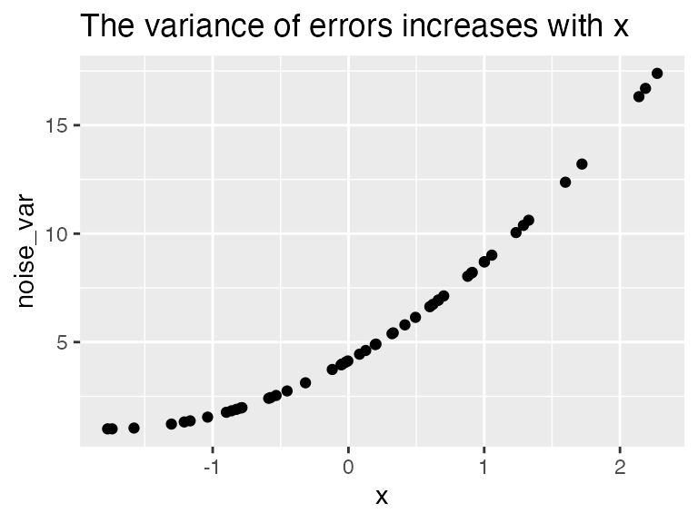
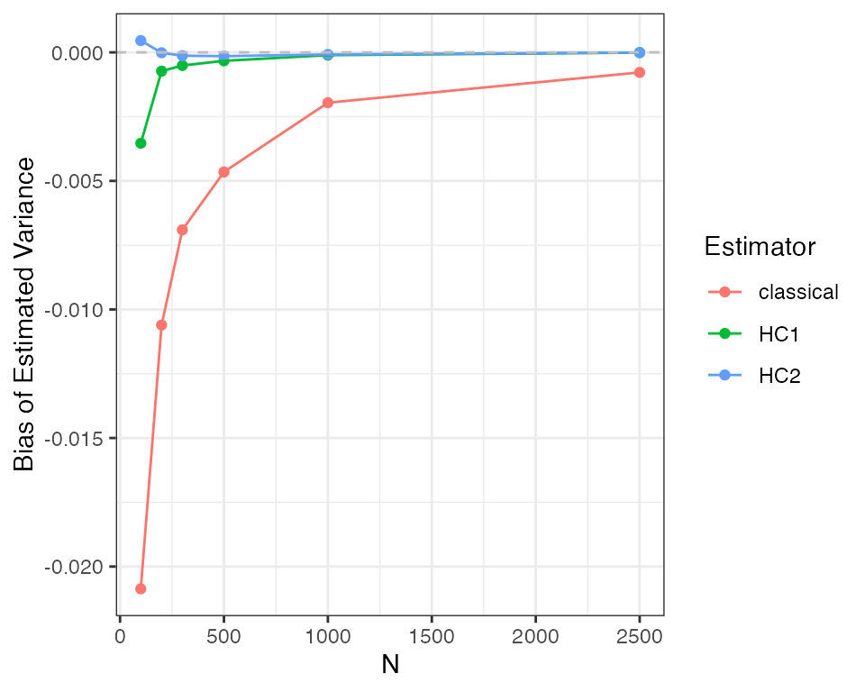

Simulations - OLS and Variance
Luke Sonnet
Source:../vignettes/simulations-ols-variance.Rmd
simulations-ols-variance.RmdThis document exposes the properties of different variance estimators using DeclareDesign and estimatr. More details about the variance estimators with references can be found in the mathematical notes.
Homoskedastic errors
Under simple conditions with homoskedasticity (i.e., all errors are drawn from a distribution with the same variance), the classical estimator of the variance of OLS should be unbiased. In this section I demonstrate this to be true using DeclareDesign and estimatr.
First, let’s take a simple set up:
\[ \begin{aligned} \mathbf{y} &= \mathbf{X}\beta + \epsilon, \\ \epsilon_i &\overset{i.i.d.}{\sim} N(0, \sigma^2). \end{aligned} \]
For our simulation, let’s have a constant and one covariate, so that \(\mathbf{X} = [\mathbf{1}, \mathbf{x_1}]\), where \(\mathbf{x_1}\) is a column vector of a covariate drawn from a standard normal distribution. Let’s also assume that are covariates are fixed, rather than stochastic. Let’s draw the data we will use.
set.seed(41)
dat <- data.frame(x = rnorm(50))The function
\[ \epsilon_i \overset{i.i.d.}{\sim} N(0, \sigma^2), \] encodes the assumption of homoskedasticity. Because of these homoskedastic errors, we know that the true variance of the coefficients with fixed covariates is
\[ \mathbb{V}[\widehat{\beta}] = \sigma^2 (\mathbf{X}^\top \mathbf{X})^{-1}, \]
where I hide conditioning on \(\mathbf{X}\) for simplicity.
Let’s compute the true variance for our dataset.
sigmasq <- 4
# Build the X matrix with intercept
Xmat <- cbind(1, dat$x)
# Invert XtX
XtX_inv <- solve(crossprod(Xmat))
# Get full variance covariance matrix
true_var_cov_mat <- sigmasq * XtX_invBut for this example, we are only going to focus on the variance for the covariate, not the intercept, so let’s store that variance.
true_varb <- true_var_cov_mat[2, 2]
true_varb## [1] 0.07831866Now, using DeclareDesign, let’s specify the rest of the data generating process (DGP). Let’s set \(\beta = [0, 1]^\top\), so that the true DGP is \(\mathbf{y} = \mathbf{x_1} + \epsilon\).
simp_pop <- declare_model(
epsilon = rnorm(N, sd = 2),
y = x + epsilon
)Now let’s tell DeclareDesign that our target, our estimand, is the true variance.
varb_estimand <- declare_inquiry(true_varb = true_varb)Our estimator for this estimand will be the classical OLS variance estimator, which we know should be unbiased:
\[ \widehat{\mathbb{V}[\widehat{\beta}]} = \frac{\mathbf{e}^\top\mathbf{e}}{N - K} (\mathbf{X}^\top \mathbf{X})^{-1}, \]
where the residuals \(\mathbf{e} = \mathbf{y} - \mathbf{X}\widehat{\beta}\), \(N\) is the number of observations, and \(K\) is the number of regressors—two in our case. We can easily get this estimate of the variance by squaring the standard error we get out from lm_robust in estimatr. Let’s tell DeclareDesign to use that estimator and get the coefficient on the \(\mathbf{x}_1\) variable.
lmc <- declare_estimator(
y ~ x,
model = lm_robust,
se_type = "classical",
inquiry = varb_estimand,
term = "x"
)Now, we want to test for a few results using Monte Carlo simulation. Our main goal is to show that our estimated variance is unbiased for the true variance (our estimand). We can do this by comparing the mean of our estimated variances across our Monto Carlo simulations to the true variance. We can also show that the standard error of our coefficient estimate is the same as the standard deviation of the sampling distribution of our coefficient. Lastly, we also measure the coverage of our 95 percent confidence intervals across simulations to test whether the they cover the true coefficient 95 percent of the time.
Let’s first set up the design and our diagnosands.
# First declare all the steps of our design, starting with our fixed data
classical_design <- declare_model(dat) + simp_pop + varb_estimand + lmc
# Declare a set of diagnosands that help us check if
# we have unbiasedness
my_diagnosands <- declare_diagnosands(
`Bias of Estimated Variance` = mean(std.error^2 - estimand),
`Bias of Standard Error` = mean(std.error - sd(estimate)),
`Coverage Rate` = mean(1 <= conf.low & 1 >= conf.high),
`Mean of Estimated Variance` = mean(std.error^2),
`True Variance` = estimand[1],
keep_defaults = FALSE
)Now let’s run the simulations!
set.seed(42)
dx1 <- diagnose_design(
classical_design,
sims = sims,
diagnosands = my_diagnosands
)
kable(reshape_diagnosis(dx1, digits = 3))Our diagnosands can help us see if there is any bias. As we can see the bias is very close to zero. Because the standard error of the bias is much larger than the estimated bias, we can be reasonably certain that the only reason the bias is not exactly zero is due to simulation error. We can also see the unbiasedness visually, using a density plot of estimated variances with a line for the true variance.

Heteroskedastic errors
Let’s use the same fixed data set-up, but introduce heteroskedasticity. In this case, the variance of the errors is different across units:
\[ \epsilon_i \sim N(0, \sigma_i^2), \]
where \(\sigma^2_i \neq \sigma^2_j\) for some units \(i\) and \(j\). If the variance of the errors is not independent of the regressors, the “classical” variance will be biased and inconsistent. Meanwhile, heteroskedastic-consistent variance estimators, such as the HC2 estimator, are consistent and normally less biased than the “classical” estimator. Let’s demonstrate this using DeclareDesign. First, let’s specify the variance of the errors to be strongly correlated with \(x\).
dat <- mutate(dat, noise_var = 1 + (x - min(x))^2
)
ggplot(dat, aes(x, noise_var)) + geom_point() +
ggtitle("The variance of errors increases with x")
Note that the general form of the true variance with fixed covariates is:
\[ \mathbb{V}[\widehat{\beta}] = (\mathbf{X}^\top \mathbf{X})^{-1} \mathbf{X}^\top \mathbf{\Phi} \mathbf{X} (\mathbf{X}^\top \mathbf{X})^{-1}, \]
where \(\mathbf{\Phi}\) is the variance covariance matrix of the errors, or \(\mathbf{\Phi} = \mathbb{E}[\epsilon\epsilon^\top]\). In the above case with homoskedasticity, we assumed \(\mathbf{\Phi} = \sigma^2 \mathbf{I}\) and were able to simplify. Now, as in the standard set up for heteroskedasticity, we set \(\mathbf{\Phi}\) to be a diagonal matrix where noise_var, the variance for each unit’s error, is on the diagonal, like so:
\[ \mathbf{\Phi} = \begin{bmatrix} \sigma_1^2 & 0 & \cdots & 0 \\ 0 & \sigma_2^2 & \cdots & 0 \\ \vdots & \vdots & \ddots & \vdots \\ 0 & 0 & \cdots & \sigma_n^2 \end{bmatrix} \]
Using that error structure and the error for each unit, we can estimate the true variance.
Xmat <- with(dat, cbind(1, x))
XtX_inv <- solve(crossprod(Xmat))
varb <- tcrossprod(XtX_inv, Xmat) %*% diag(with(dat, noise_var)) %*% Xmat %*% XtX_inv
true_varb_het <- varb[2, 2]
true_varb_het## [1] 0.1473923Now let’s use DeclareDesign to test whether HC2 is less biased in this example than classical standard errors. HC2 is the estimatr default; we’ll also throw in HC1, which is Stata’s default robust standard error estimator. I’m going to make a “designer,” which is a function that returns a design.
het_designer <- function(N) {
dat <- fabricate(N = N, x = rnorm(N), noise_var = 1 + (x - min(x))^2)
# Get true variance for this data
Xmat <- with(dat, cbind(1, x))
XtX_inv <- solve(crossprod(Xmat))
varb <- tcrossprod(XtX_inv, Xmat) %*% diag(with(dat, noise_var)) %*% Xmat %*% XtX_inv
true_varb_het <- varb[2, 2]
# Population function now has heteroskedastic noise
simp_pop <- declare_model(
dat,
epsilon = rnorm(N, sd = sqrt(noise_var)),
y = x + epsilon
)
varb_het_estimand <- declare_inquiry(true_varb_het = true_varb_het)
# Now we declare all three estimators
lm1 <- declare_estimator(
y ~ x,
model = lm_robust,
se_type = "classical",
inquiry = varb_het_estimand,
term = "x",
label = "classical"
)
lm2 <- declare_estimator(
y ~ x,
model = lm_robust,
se_type = "HC1",
inquiry = varb_het_estimand,
term = "x",
label = "HC1"
)
lm3 <- declare_estimator(
y ~ x,
model = lm_robust,
se_type = "HC2",
inquiry = varb_het_estimand,
term = "x",
label = "HC2"
)
# We return the design so we can diagnose it
return(simp_pop + varb_het_estimand + lm1 + lm2 + lm3)
}So let’s use the same diagnosands as above to test the properties of our estimators with heteroskedasticity.
# Create a design using our template and the data we have been using
het_design <- het_designer(N = 50)
dx2 <- diagnose_design(
het_design,
diagnosands = my_diagnosands,
sims = sims
)
kable(reshape_diagnosis(dx2))The bias for the HC2 errors is much closer to zero, whereas the bias for the classical error is much larger, especially when compared to the standard error of the bias diagnosand. How does this bias change as the sample size changes? As the HC2 variance estimate is consistent under heteroskedasticity, it should converge to zero.
designs <- expand_design(het_designer, N = c(100, 200, 300, 500, 1000, 2500))
set.seed(42)
dx3 <- diagnose_design(designs, sims = sims, diagnosands = my_diagnosands)
ggplot(dx3$diagnosands_df, aes(x = N, y = `Bias of Estimated Variance`, color = estimator)) +
geom_point() +
geom_line() +
geom_hline(yintercept = 0, linetype = 2, color = "grey") +
labs(color = "Estimator") +
theme_bw()
As you can see, the HC2 variance tends to have less bias and is consistent, converging to the true value as the sample size increases. The classical standard error estimator is neither unbiased nor consistent. The HC1 variance is also “robust” to heteroskedasiticity but exhibits greater bias than HC2 in this example.